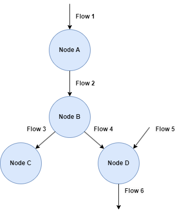
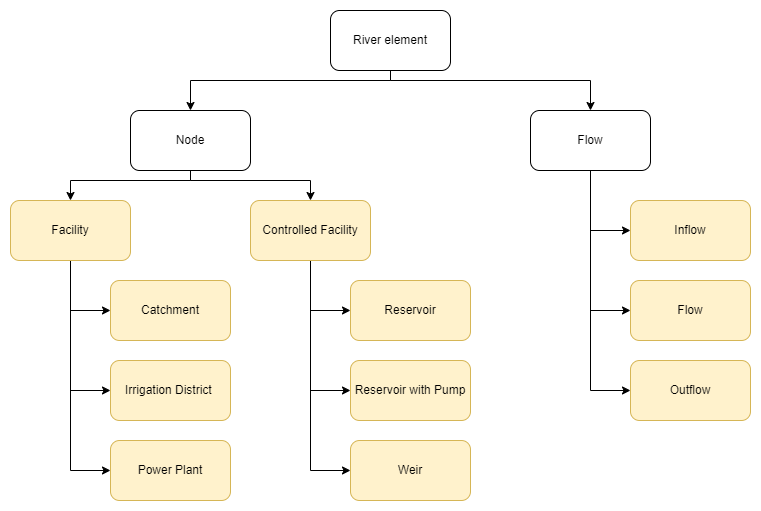
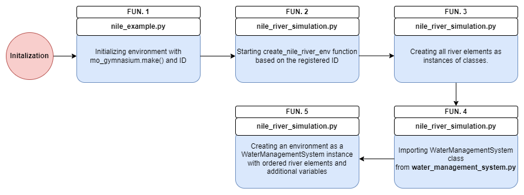
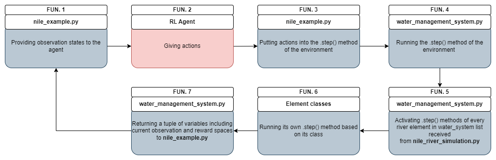
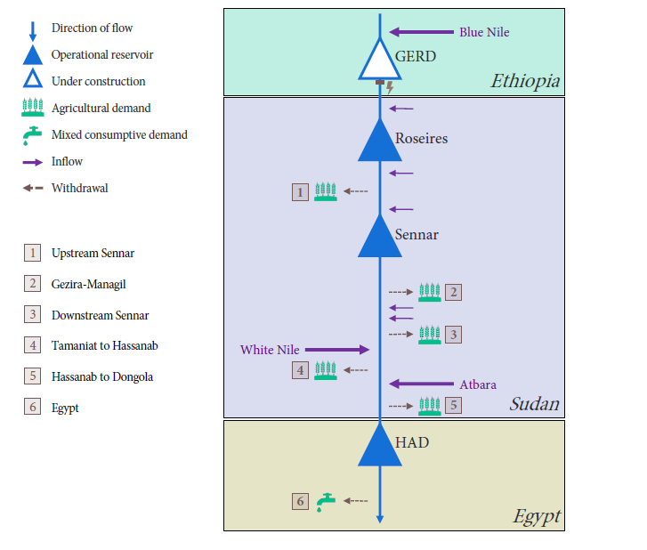
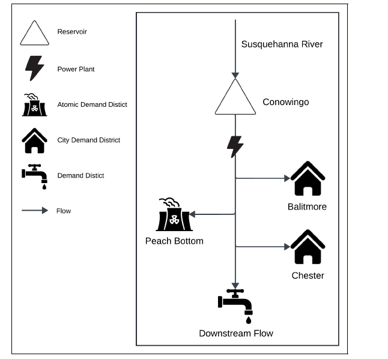
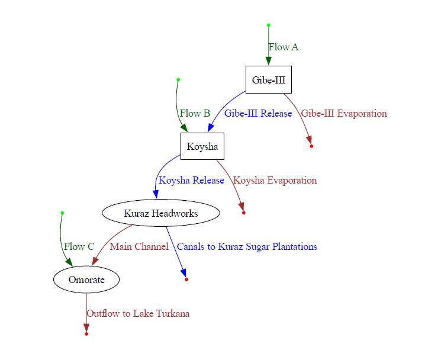

Morl4water Intro¶
{kind=link}
Welcome to morl4water, a flexible gym environment designed for simulating water management in river systems. With morl4water, you can build detailed water simulations and train or test your multi-objective reinforcement learning (MORL) agents in these settings. This guide will walk you through the key features of the tool. Please refer to the relevant sections based on your needs.
Simulation Approach¶
The morl4water framework is built on the assumption that any river system to be simulated can be represented by a structured combination of nodes and flows. Each major component of the system—such as reservoirs, power plants, irrigation districts, etc.—is represented as a “node” with unique attributes and behaviors tailored to that element. These nodes are then interconnected by “flows,” which direct water movement between nodes, enabling the construction of complex river architectures.
To showcase an example have a look at the picture below: 
It’s important to note that multiple flows can converge at a single node, and multiple flows can also diverge from it. Additionally, there are different types of nodes and flows, each serving unique functions within the river system. The diagram below illustrates how all elements within a river system are classified.

All yellow boxes represent classes implemented within the morl4water framework. The Facility and ControlledFacility classes are always used as superclasses for other facility-related classes. Similarly, the Flow class serves as a superclass for both Inflow and Outflow, although instances of the Flow class itself are also frequently used. To clarify the purpose of each element:
Facility (classes over which RL agent has no control over):
Catchment - A region where rainfall is naturally gathered by the landscape, effectively adding water to the system and resulting in a net gain.
Irrigation District - An area where water is consumed and water demand is to be met.
Power Plant - Place where hydropwer is produced.
Controlled Facility (classes over which RL agent has control over):
Reservoir - stores water and releases it based on the RL action.
Reservoir with Pump - stores water and releases it based on the RL action. It can also pump water against its natural flow.
Weir - It can seperate river flow into 2 seperate flows with different flow rate based on the RL action. It does not store water.
Flow:
Inflow - Flow which introduces water to the system based on the data file of water flow rates.
Flow - Flow connecting two nodes (two river elements) allowing water to go through the system.
Outflow - Flow which simply has no destination.
Time in the Simulation¶
A clear understanding of how time is handled in the simulation is essential for grasping its mechanics. For each simulation, the user needs to set four key time-related parameters:
start_date - The date when the simulation should start.
timestep_size - Time between different RL Agent’s actions usually a month.
integration_timestep_size - Time determining the shorter state updates within
timestep_size.max_episode_steps - Number of steps to end an episode. It tells how many
timestep_sizeto perform before ending the simulation.
The simulation is structured so that when an RL Agent takes an action, this action is applied consistently over the duration specified by timestep_size. During this period, each river element, such as facilities and flows, is updated at intervals defined by integration_timestep_size (typically spanning several hours) until the end of the current timestep_size. Afterward, the RL agent selects a new action based on the updated states of these elements.
Each river element is updated individually and sequentially within the timestep_size, ensuring that all elements are processed in a specific order. This approach means that, as the simulation enters a new timestep_size, an exemplary facility (node) is updated step-by-step at integration_timestep_size intervals until the end of this timestep_size. Only then a flow leaving from that facility can be subsequently updated.
Code Structure¶
To successfully simulate an environment, morl4water package refers to multiple files and scripts which are dependent on each other. To have a clearer picture of how does a simulation work, this section goes through the code details and provide descriptions of the code logics. To better visualize the logics, the Nile river case and its file names will serve as an example.
In general there are three main scripts that provide the backbone of the simulation: nile_example.py, nile_river_simulation.py, water_management_system.py. They have different functions which can be summarised in the form of the table below:

The following sections will provide a detailed description of each script. Before diving in, however, the two summary diagrams below offer a quick overview of the top-level interactions between the scripts. Each block has an assigned function number, place where the function takes place and the description of the action. The first diagram illustrates the process for initializing the river environment:

The next diagram provides a summary of how the RL Agent interacts with the environment and how the environemnt is updated after each action.

Now with these short diagram summaries it should be easier to understand more details behind the main scripts described in the next sections.
nile_example.py¶
This is the main simulation script with two crucial activities it is responsible for:
Initialising the simulation environment - Calling the environment with its ID to activate
nile_river_simulation.py.Connecting the RL Agent with the envrionment - Providing current observation states to RL Agent and passing its actions to
.step()method of the environment.
The first activity happens by creating water_management_system variable using the mo_gymnasium package as shown below:
water_management_system = mo_gymnasium.make('nile-v0')
Where nile-v0 refers to a default version of Nile environemnt as specified in nile_river_simulation.py file. The versions differ between each other only through the custom objectives. This setup aligns the morl4water environment with typical gym environments, ensuring that it behaves in a familiar way for those working with the gym framework.
The second activity happens in the run_nile() function. There, the environment is first reset using the .reset() method and then updated in a loop with actions provided by a Reinforcement Learning Agent or another source. The actions, stored in the action variable, are passed as an argument to the .step() method. With each iteration the observation states and rewards are recalculated and returned to the RL Agent which takes a new action based on this information. This loop continues until the simulation concludes or an environment constraint is violated. In the case of a violation, the variables final_truncated and final_terminated will trigger the loop to break.
As can be understood, .step() method is crucial since with every interation it returns a tuple of multiple important variables. Those include current states of the observation space (final_observation) and rewards (final_reward ) for every action. What happens exactly within .step() can be examined in water_management_system.py script located in morl4water/core/envs/.
nile_river_simulation.py¶
As mentioned before to start the whole simulation the environemnt must be first initialised. This initialisation refers to calling a function in nile_river_simulation.py which creates an instance of the gym environment class. In general the script actions can be summed up to:
Creating simulation elements - reservoirs etc. as instances of specific classes.
Ordering simulation elements - creating an ordered list to ensure that element updates align with the direction of water flow.
Creating an environment - as an instance of the gym environment class with all variables.
Defining simulation elements involves creating instances of classes for each component of the river system, such as reservoirs, flows, irrigation districts, and others. This setup takes place within the create_nile_river_env() function, where all elements follow a similar structure, as shown in the example of a reservoir below:
GERD_reservoir = Reservoir(
"GERD",
max_capacity=117500000000.0,
max_action=[10000],
integration_timestep_size=relativedelta(minutes=240),
objective_function=Objective.no_objective,
stored_water=15000000000.0,
evap_rates=np.loadtxt(data_directory / "reservoirs" / "evap_GERD.txt"),
evap_rates_timestep_size=relativedelta(months=1),
storage_to_minmax_rel=np.loadtxt(data_directory / "reservoirs" / "store_min_max_release_GERD.txt"),
storage_to_level_rel=np.loadtxt(data_directory / "reservoirs" / "store_level_rel_GERD.txt"),
storage_to_surface_rel=np.loadtxt(data_directory / "reservoirs" / "store_sur_rel_GERD.txt"),
)
As shown, each river element’s class may require a range of variables, and in some cases, external data files as well, depending on the specific requirements of that element. To better understand what variables and data files are needed for specific classes and what do they mean please refer to the inputs of specific classes in morl4water/models.
Once all river system elements have been assigned to a class it is possible to order them in water_systems entry when creating an instance of WaterManagementSystem class. This happens at the end of create_nile_river_env() function.
The actual creation of the environment happens when it’s registered version is called through water_management_system = mo_gymnasium.make('nile-v0') in nile_example.py. The name nile-v0 refers to the registered version of the enviornment which can be seen at the beginning of nile_river_simulation.py in this way:
register(
id='nile-v0',
entry_point='examples.nile_river_simulation:create_nile_river_env',
)
Now in this case, the instance created under water_management_system variable will be based on the gym environment’s class defined in water_management_system.py.
water_management_system.py¶
The role of water_management_system.pycan be quickly described as:
Providing implementation of the environment class - The class implementation includes all essential methods, covering the definition of observation, reward, and action spaces, as well as the core
.step()method responsible for updating the whole environment state.
This script holds the class description of the whole environment. It determines how observation and action space are handled and returned to nile_example.py. A very important part of the whole class is the step() method. It is called in nile_example.py and leads to the whole process of updates for every system element in the river flow acccording to the order from nile_river_simulation.py. Those element updates are initated in a loop where all water elements in the simulation correspond to water_systems list as shown below:
for water_system in self.water_systems:
water_system.current_date = self.current_date
if isinstance(water_system, ControlledFacility):
observation, reward, terminated, truncated, info = water_system.step(action[water_system.name])
elif isinstance(water_system, Facility) or isinstance(water_system, Flow):
observation, reward, terminated, truncated, info = water_system.step()
else:
raise ValueError()
The elements are organized into three main superclasses: ControlledFacility, Facility and Flow. All these types are updated through the .step() method of their respective superclass. Additionally, ControlledFacility elements receive an action input, as they are designed to be controlled by the agent.
At the end of each iteration, the .step() method in water_management_system.py returns a tuple of several variables to nile_example.py, including arrays of observations and rewards, after all elements have been updated. Each iteration corresponds to a time interval specified by timestep_size (usually one month). These outputs are then accessed by the RL Agent in nile_example.py, which uses the information to decide on its next action. This initiates another iteration, where the environment, stored in the water_management_system variable, undergoes an update via its .step() method. The loop continues in nile_example.py until the simulation completes or encounters errors.
As previously mentioned, each element in the environment activates its own .step() method during an update. To provide a clearer understanding of how this process works, the following sections will detail the state update mechanisms for different facilities (nodes) and flows.
Updating Facilities¶
In general, the river environment is updated with .step() as implemented in water_management_system.py. Next, this method comes down to activating .step() of particular facilities either instances of ControlledFacility or Facility superclass. The full implementation of superclasses can be found in morl4water/models/facility.py. Nevertheless, for both of those, their .step() methods are very similar and structured in a similar way:
Appending self.all_outflow list - Appending list of outflow rates [m^3/s] based on the current action for this facility.
Providing observation variable - Providing the current state of the facility [Only ControlledFacility]
Determinig a potential reward - Each facility may have an objective assigned to it in
nile_river_simulation.py.Checking if terminated - Check if a potential constraint has been violated to end an episode.
Checking if truncated - Check if an external condition (like time limit) should end an episode.
Checking info - Providing useful information about a facility in an
infovariable.
An examplary .step() method for ControlledFacility is presented below:
def step(self, action: ActType) -> tuple[ObsType, SupportsFloat, bool, bool, dict]:
self.all_outflow.append(self.determine_outflow(action))
observation = self.determine_observation()
reward = self.determine_reward()
terminated = self.is_terminated()
truncated = self.is_truncated()
info = self.determine_info()
self.timestep += 1
return (
observation,
reward,
terminated,
truncated,
info,
)
Now all of those parts of .step() method are handled by additional methods. Please note that some of those are defined differently for each element of the river system. Thus, to exactly see what it is behind a method you may need to refer to specific classes like reservoir etc., these can be found in morl4water/models. However, a high-level overview is provided below:
self.determine_outflow() - This method is responsible for making the water flow through a river element. For instances of
Facilitysuperclass it is one of theFacilitymethods. For instances ofControlledFacilitysuperclass, one should look for the implementation within the specific class. The next section will develop more on this method.self.determine_reward() - This refers to the method implemented in a specific class where
self.objective_function()takes an argument and returns the reward. Theself.objective_functionis assigned to an instance of the class at its creation innile_river_simulation.pyas one of standard functions frommorl4water/core/models/objective.py.self.is_terminated() - For instances of the
Facilitysuperclass, this method originates from theFacilityclass and returnsFalseby default. In contrast, for instances of theControlledFacilitysuperclass, the method is defined within their specific class. For instance, in the case of reservoirs, the method will returnTrueif the volume of stored water exceeds its physical limits.self.is_truncated() - This method is implemented directly in
ControlledFacilityandFacilitysuperclasses. In the current state of development it always returnsFalse.self.determine_info() - This refers to the method implemented in a specific class. Based on the class it can return a dictionary with different information.
Determining Facilities Outflows¶
Determining outflows of system’s elements in the river environment is a critical part of the .step() method in each superclass. The function self.determine_outflow() allows water to flow through river elements and updates their states. The implementation of this function varies between the two superclasses.
Facility Outflows¶
For Facility superclass, the method self.determine_outflow() is defined directly within itself:
def determine_outflow(self) -> float:
return self.get_inflow(self.timestep) - self.determine_consumption()
Now self.determine_consumption() method comes from a specific element class and self.get_inflow() is a method of Facility superclass returning an inflow for a specific self.timestep. The self.get_inflow() is, in turn, defined as:
def get_inflow(self, timestep: int) -> float:
return self.all_inflow[timestep]
The self.all_inflow list is a list of inflows which is updated by another method within Facility superclass called set_inflow:
def set_inflow(self, timestep: int, inflow: float) -> None:
if len(self.all_inflow) == timestep:
self.all_inflow.append(inflow)
elif len(self.all_inflow) > timestep:
self.all_inflow[timestep] += inflow
else:
raise IndexError
The use of if and elif statements is necessary due to the potential for multiple inflows converging on a single facility. Given the structure of morl4water, the set_inflow method is invoked during updates of Flow objects. This means that Flow objects must be called before instances of Facility in the river system (this comes from elements ordering in nile_river_simulation.py), ensuring that there is always a flow connecting a node to the rest of the system. These Flow objects serve as crucial components within the overall river system, linking various Facility and ControlledFacility objects. Specifically, the set_inflow method is called within the Flow superclass in the set_destination_inflow() method to append the inflow rates to the self.all_inflow list of its destination node.
ControlledFacility Outflows¶
For ControlledFacility superclass, the self.determine_outflow() works a bit differently. Mainly, the self.determine_outflow() actually receives an action based on which the facility state will change. Because of this and because this action can diffferently affect the instance of ControlledFacility, the self.determine_outflow() method itself is implemented within the specific class of the river element. Usually it is a reservoir where the full process of updating water within itself is calculated based on the RL Agent’s action and water evaporation based on the reservoir’s data. This whole process for a reservoir can be seen in morl4water/models/reservoir.py.
Updating Flows¶
Instances of Flow superclass just as instances of facilites must be updated within each iteration of the main .step() method in water_management_system.py. Basically for objects of Flows the following .step() method applies:
def step(self) -> tuple[Optional[ObsType], float, bool, bool, dict]:
self.set_destination_inflow()
terminated = self.determine_source_outflow() > self.max_capacity
truncated = self.is_truncated()
reward = float("-inf") if terminated else 0.0
info = self.determine_info()
self.timestep += 1
return None, reward, terminated, truncated, info
The core function of the .step() method lies in the .set_destination_inflow() method. This function determines the flow’s destinations and any associated distribution ratios, then calculates the appropriate inflow for each destination. It does so by assessing the total inflow to the flow object and applying the distribution ratios to allocate the correct inflow amount to each destination. This is presented here:
def set_destination_inflow(self) -> None:
for destination_index, (destination, destination_inflow_ratio) in enumerate(self.destinations.items()):
destination_inflow = self.determine_source_outflow_by_destination(
destination_index, destination_inflow_ratio
)
destination.set_inflow(self.timestep, destination_inflow * (1.0 - self.evaporation_rate))
Water Simulations¶
As for now there are three simulations implemented and ready to be run:
Nile
Susquehanna
Omo
They all differ in their structure, river elements, observation space, action space and objectives. Below you should be able to find detailed descriptions of these simulations.
Nile¶
The Nile River is a critical resource in northeastern Africa, serving as a water source for hydropower, agriculture, and domestic use across multiple nations. Water rights issues, particularly between Egypt, Sudan, and Ethiopia, have intensified with Ethiopia’s construction of the Grand Ethiopian Renaissance Dam (GERD), intended for hydropower generation to boost its economic development.
Originally, the simulation starts at (2025, 1, 1) and the decisions are taken on a monthly basis over a 20-year period, resulting in 240 time steps for each episode. It also has 4 following objectives:
Ethiopia power (max), ref point: 0.0
Sudan deficit (min), ref point: -240
Egypt deficit (min), ref point: -240
HAD minimum level (max), ref point 0.0
Where max/main signifies whether an objective is to be maximised or minimised. The reference point is used for calculating hypervolume as the worst case scenario in terms of acquired rewards by the agent at the end of the simulation.
Currently the user may pick their own number of objectives they want to use in their simulations with:
2 objectives: Ethiopia power (max) and Egypt deficit (min)
3 objectives: Ethiopia power (max), Egypt deficit (min), and Sudan deficit (min)
4 objectives: All original objectives
Where in all cases:
Observation space: Storage in 4 reservoirs, month (5 dimensions)
Action space: Release per each reservoir (4 dimensions)
Here you can see a picture visualising Nile river structure: 
Taken from: Sari, Y. (2022). Exploring Trade-offs in Reservoir Operations through Many-Objective Optimization: Case of the Nile River Basin (Master’s thesis). Delft University of Technology.
Susquehanna¶
The Susquehanna River, regulated by the Conowingo Dam, supports diverse needs, including hydroelectric power, water supply, and recreation. However, low-flow conditions create challenging trade-offs, forcing Conowingo to balance energy production with environmental and community water needs.
Originally, the simulation starts at (2021, 1, 1) and the decisions are made every 4 hours throughout a year resulting in 2190 time steps per episode (the whole simulation). It also has 6 following objectives:
Recreation (max), ref point: 0.0
Energy revenue (max), ref point: 0.0
Baltimore (max), ref point: 0.0
Atomic (max), ref point: 0.0
Chester (max), ref point: 0.0
Environment (min), ref point: -2190
Where max/main signifies whether an objective is to be maximised or minimised. The reference point is used for calculating hypervolume as the worst case scenario in terms of acquired rewards by the agent at the end of the simulation.
Currently the user may pick their own number of objectives they want to use in their simulations with:
2 objectives: Baltimore (max) vs Chester (max)
3 objectives: Baltimore (max), Atomic (max), Chester (max)
4 objectives: Baltimore (max), Atomic (max), Chester (max), Recreation (max)
5 objectives: Baltimore (max), Atomic (max), Chester (max), Recreation (max), revenue (max)
6 objectives: Baltimore (max), Atomic (max), Chester (max), Recreation (max), revenue (max), environmental index (min)
Where in all cases:
Observation space: Water level, month (2 dimensions)
Action space: Release per each reservoir (4 dimensions)
Here you can see a picture visualising Omo river structure: 
Taken from: Muniak, K. (2024). RL4Water: Reinforcement Learning Environment for Water Management (Bachelor’s thesis). Delft University of Technology, Faculty of EEMCS.
Omo¶
The Lower Omo-Gibe River Basin in Ethiopia highlights the complex challenges of balancing hydropower, irrigation, and environmental flow needs in a developing region. This model includes key infrastructure like the Gibe III and Koysha dams, the Kuraz sugar plantation irrigation schemes and Omorate town.
Originally, the simulation starts at (2029, 1, 1) and the decisions are taken on a monthly basis over a 12-year period, resulting in 144 time steps for each episode (the whole simulation). It also has 3 following objectives:
Hydropower at Gibe-III and Koysha plants (max), ref point: 0.0
Kuraz plantation deficit (min), ref point: -144
Omorate town deficit (min), ref point: -144
Where max/min signifies whether an objective is to be maximised or minimised. The reference point is used for calculating hypervolume as the worst case scenario in terms of acquired rewards by the agent at the end of the simulation.
Currently the user may pick only one variation of objectives which is the default one with all 3 objectives:
3 objectives: Hydropower (max), Kuraz plantation deficit (min), Omorate town deficit (min)
Where in all cases:
Observation space: Gibe-III reservoir, Koysha reservoir, month (3 dimensions)
Action space: Gibe-III reservoir’s release, Koysha reservoir’s release, Weir(3 dimensions)
The Omo case is unique because, beyond managing reservoir releases, it also involves determining the percentage split of water flow at the weir. This weir does not store water; instead, it divides the flow into two separate streams—one directed toward the Kuraz plantations and the other to Omorate town.
Here you can see a picture visualising Omo river structure: 
Taken from: Bangar, Y. (2024). Modeling water resources for everyone: Transparent and effective approaches for complex systems: Case study of the Lower Omo Basin (Master’s thesis). Delft University of Technology.
Running¶
As mentioned in the section of “Implemented Simulations” there are currently 3 river systems which can be simulated with a different number of objectives.
Running Manually¶
If you want to run the simulation manually, navigate to one of the main scripts containing a line defining the environment like this:
water_management_system = mo_gymnasium.make('nile-v0')
In case of Nile simulation it would be a script called nile_example.py. Based on the river simulation you plan to run and the number of objectives, ensure that you adjust the water_management_system variable accordingly: (For reference on what each objective corresponds to, consult the “Implemented Simulations” section.)
Nile:
mo_gymnasium.make('nile-v0')2 objectives:
mo_gymnasium.make('nile2-v0')3 objectives:
mo_gymnasium.make('nile3-v0')4 objectives:
mo_gymnasium.make('nile-v0')
Susquehanna:
mo_gymnasium.make('susquehanna-v0')2 objectives:
mo_gymnasium.make('susquehanna2-v0')3 objectives:
mo_gymnasium.make('susquehanna3-v0')4 objectives:
mo_gymnasium.make('susquehanna4-v0')5 objectives:
mo_gymnasium.make('susquehanna5-v0')6 objectives:
mo_gymnasium.make('susquehanna-v0')
Omo
mo_gymnasium.make('omo-v0')3 objectives:
mo_gymnasium.make('omo-v0')
After this make sure the action variable is connected to your RL Agent since by default it samples random actions from the action space in the following manner:
action = water_management_system.action_space.sample()
Now once you run the script, you should be able to run the simulation successfully.
Running launch_experiment.py¶
If your version of morl4water includes the launch_experiment.py script along with its supplementary files, you can start the simulation directly from the console using a single command. Below are examples of commands for running simulations across different river systems:
Nile:
python launch_experiment.py --algo pcn --gamma 1.0 --env-id nile-v0 --num-timesteps 200000 --ref-point 0 -240 -240 0 --init-hyperparams learning_rate:0.0002 hidden_dim:128 "scaling_factor:np.array([0.5, 0.5, 0.5, 0.5, 0.5])" --wandb-entity [your_name] --seed 10
Susquehanna:
python launch_experiment.py --algo pcn --env-id susquehanna-v0 --num-timesteps 200000 --gamma 1.0 --ref-point 0 0 0 0 0 -2190 --init-hyperparams learning_rate:0.0004 hidden_dim:128 "scaling_factor:np.array([0.5, 0.5, 0.5, 0.5, 0.5, 0.5, 0.5])" --wandb-entity [your_name] --seed 10
Omo:
python launch_experiment.py --algo pcn --gamma 1.0 --env-id omo-v0 --num-timesteps 200000 --ref-point 0 -144 -144 --init-hyperparams learning_rate:0.0002 hidden_dim:128 "scaling_factor:np.array([0.5, 0.5, 0.5, 0.5])" --wandb-entity [your_name] --seed 10
Where:
algo: Corresponds to the MORL algorithm one decides to use.
env-id: Is the simulation with the number of objectives that was picked.
num-timesteps: Is the number of timesteps for the simulation.
ref-point: Is the reference point for calculating hypervolume of the solution set coming from Pareto front. Each objective must be given here the worst case of acquired rewards at the end of the episode.
init-hyperparams learning_rate: Is the learning rate for the algorithm.
hidden_dim: Is the hidden dimension for the network within the algorithm.
scaling_factor: Is a numpy array of scaling factors which length is always bigger by one compared to the number of objectives.
wandb-entity: Is the entity used for sending logs to weights and biases account.
seed: Is the initial value used to start a pseudorandom number generator.
Creating a Simulation¶
To create a new river simulation from scratch within morl4watwer package, it is necessary to create two new scripts and add the required data files related to reservoirs and other potential facilities. The needed files are as follows:
[project name]_example.py
This is the main file where the environement is initialised and the.step()method for the environment is called and updated in a loop. It should be located as a seperate script inmorl4waterpackage.[project name]_simulation.py
This is where the river components (facilites like reservoirs, flows etc.) are defined as objects of classes and later installed in a list to form the whole river system for the simulation. The order ofcomponents is important and should follow the river flow. This file should be located inmorl4water/examplesdirectory.Data files (.txt)
The specific data files needed for creating a simulation depend on the number and type of facilities used in the river simulation. Please refer to explanations and the code of picked facilites to learn what data files are needed in your case. The data files should be located inmorl4water/examples/data/[project name]directory.
The precise explanations of the aforementioned scripts should be located in Structure section of this documentation. To illustrate how the list of all needed files could look like, the list of files for Nile river simulation is presented below.
Nile Case¶
Below one can see how the necessary scripts and data files were structured for the Nile river case. Only parts of the whole morl4water package containing the necessary scripts and files (green names) are presented.
morl4water/: Root directory of the morl4water package.nile_example.py: The main file where the environment is initialised.examples/: Contains source code for the project.nile_river_simulation.py: Defining river’s components and ordering them with the river flow.data/:nile_river/:catchments/: All data regarding water inflows to the river. To simplify only files related to Blue Nile inflow are shown here.InflowBlueNile.txt: Data file with water flows of Blue Nile inflow.
irrigation/: All data regarding water demands for irrigation districts. To simplify only files related to Egypt district are shown here.irr_demand_Egypt.txt: Data file with demands for Egypt district.
reservoirs/: All data regarding reservoirs. To simplify only files related to GERD reservoir are shown here.evap_GERD.txt: Reservoir evaporation data.store_level_rel_GERD.txt: Data relating reservoir’s level(height) to reservoir’s volume.store_min_max_release_GERD.txt: Data relating max and min releases to reservoir’s volume.store_sur_rel_GERD.txt: Data relating reservoir’s water surface to reservoir’s volume.